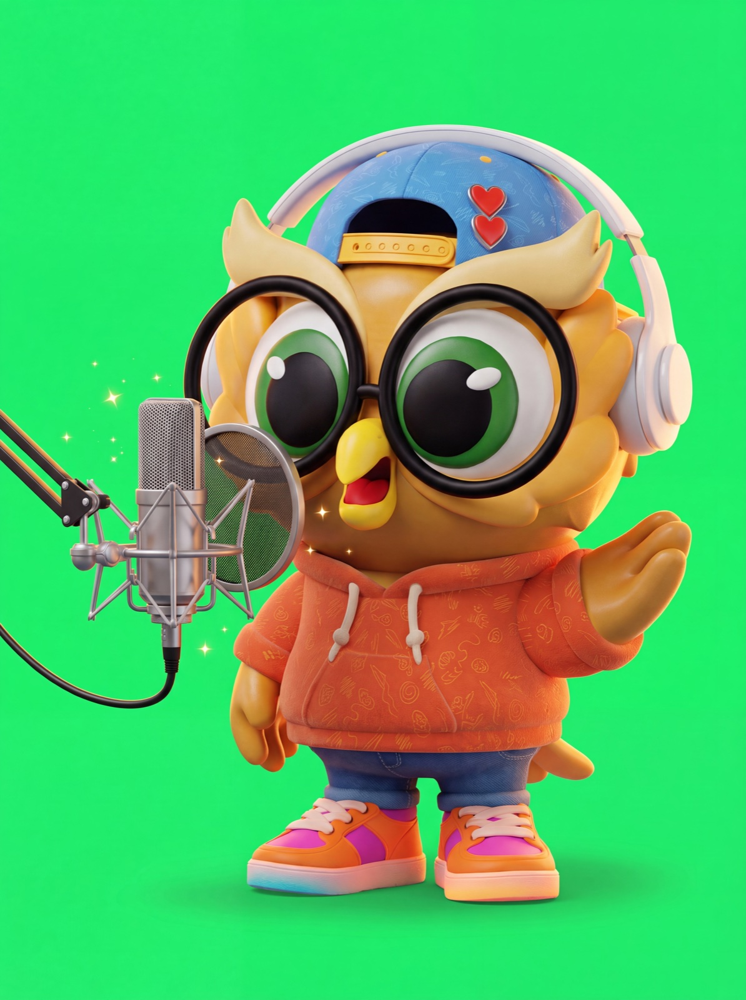

La voz oficial de Saúl, disponible 24/7. Se escribe la frase, se elige la emoción, y en ~2 segundos hay un audio con calidad de emisión listo para descargar. Esta página explica cómo está construida la plataforma y cómo opera el servicio.

Antes, la voz de Saúl se producía de forma artesanal: una voz de IA no clonada que había que ajustar a mano, pieza por pieza, sin garantía de que sonara igual la próxima vez. Hoy existe la voz oficial clonada del personaje: el equipo de la marca escribe el guion y recibe el audio al instante, con el mismo timbre, energía y personalidad, en la emoción que pida la pieza.
La plataforma funciona como un estudio de grabación profesional. Tiene un talento, una fábrica y una cabina, y las tres piezas operan juntas cada vez que alguien genera un audio.
Con el material de voz original de Saúl entrenamos un modelo de voz: una réplica digital que aprendió su timbre, su energía y su manera de hablar.
Ese modelo vive en una bóveda digital privada de un proveedor especializado de clase mundial. Nadie fuera de este proyecto puede verlo ni usarlo. Es un activo de la marca, bajo custodia de ARDE.
Cuando alguien escribe una frase, esta viaja a un motor profesional de síntesis de voz donde el modelo de Saúl la "actúa" y devuelve el audio en ~2 segundos.
Esa conexión se hace por API, un enchufe de servicios. Como la energía eléctrica: no se necesita una represa en casa, uno se conecta a la red y se paga por lo que se consume, mes a mes.
Todo lo que la marca ve y toca lo diseñó y construyó ARDE desde cero: la interfaz con identidad Paper Mate, las emociones y efectos, la velocidad de habla, los favoritos, el historial y la descarga en alta calidad.
Vive en un servidor propio de ARDE, con dominio y certificado de seguridad. La entrada es con código privado y la llave que conecta con el motor está protegida en el servidor: ningún usuario puede verla ni extraerla.
Alguien del equipo entra con el código privado, escribe "¡Hola! Soy Saúl" y elige la emoción, por ejemplo juguetón, y la velocidad.
La plataforma de ARDE le agrega la dirección de actuación (cómo debe interpretarse la frase) y la envía de forma segura al motor de voz.
El modelo de Saúl "actúa" la frase y devuelve el audio en ~2 segundos, con el timbre y la energía oficiales del personaje.
El servidor de ARDE recibe el audio y lo nivela a estándar broadcast. Queda en pantalla listo para escuchar, marcar como favorito y descargar en alta calidad.
Llegar a esta calidad no fue un intento: se exploraron más de 15 procesos de clonación de voz por tres rutas técnicas distintas antes de elegir la arquitectura definitiva. La calidad que exige un personaje de marca no se logra con herramientas gratuitas.
Entrenamos modelos propios en servidores con GPU dedicada y probamos varios motores de código abierto. Ninguno alcanzó la calidad de marca de forma consistente: voces que perdían volumen, artefactos, poca expresividad, y un costo de GPU por hora para mantenerlo encendido.
Se evaluaron las plataformas comerciales grandes del mercado. Buena calidad general, pero suscripciones más costosas, menos control del proceso y una experiencia que no se puede personalizar con la identidad de Paper Mate.
Un modelo de voz profesional en bóveda privada, conectado por API a una plataforma construida a la medida por ARDE. La mejor fidelidad lograda en todas las pruebas, generación en ~2 segundos, y control total de la experiencia y del activo.
A diferencia de un video o una imagen que se entregan una vez, la voz de Saúl es un activo en operación permanente: el modelo está custodiado en una bóveda, el motor se renta mes a mes, y la plataforma se mantiene, se monitorea y se mejora. Por eso funciona como suscripción mensual, no como entregable único.
El modelo de Saúl es un activo de la marca. ARDE lo protege, administra los accesos y garantiza que nadie fuera del proyecto pueda usarlo.
La conexión al motor de síntesis de clase mundial se paga por consumo, mes a mes. El plan la incluye: la marca nunca administra proveedores en USD.
Servidor, dominio, certificado, monitoreo y protección de llaves. La plataforma en línea 24/7 con la puerta cerrada a terceros.
Acompañamiento al equipo de la marca, ajustes de calidad y nuevas funciones: emociones, efectos y formatos se agregan sin costo de desarrollo aparte.
Cuando exista material nuevo de la voz de Saúl, el modelo se reentrena para mejorar fidelidad y expresividad. La voz mejora con el tiempo.
ARDE cuida que cada audio suene a Saúl: dirección de actuación, control de calidad y criterio de marca en cada generación.
La fase de prueba actual concluye el 31 de julio de 2026. A partir de ahí, la marca elige el camino: un plan mensual operado por ARDE, o la implementación completa en cuentas propias de la marca con un pago único de integración.
La plataforma tal como opera hoy: ARDE custodia el modelo, asume los proveedores y mantiene todo funcionando. La marca solo escribe y descarga. Inicia el 1 de agosto de 2026.
Paquete adicional: +250 audios por USD $150 en el mes que se necesite, pensado para picos de campaña como Back to School. Nuevas emociones o estilos de voz se cotizan como desarrollo aparte.
Exactamente el mismo estudio de voz, pero construido de cero sobre las cuentas y la infraestructura de la marca: la voz se re-clona en una cuenta propia del motor de voz a nombre de la marca, la plataforma se monta en su servidor y dominio, y todo queda conectado y corriendo. ARDE cobra una única vez por la integración y el montaje completo; a partir de ahí, la operación es de la marca.
Los costos directos de los proveedores en USD (motor de voz por consumo y servidor), la operación y el mantenimiento de la plataforma, la custodia del modelo y la gestión de accesos. ARDE queda disponible como soporte por demanda, cotizado por requerimiento.
El valor del plan no es el servidor: es la operación del activo. Producir la voz de forma artesanal exigía horas de ajustes por pieza, sin una voz consistente; una sesión de locutor en cabina cuesta entre USD $80 y $150 por lote de frases. El plan entrega hasta 500 audios al mes, al instante, con la voz oficial del personaje, protegida y operada por ARDE.
El modelo de voz no es un archivo que se pueda entregar: es un activo que vive en una bóveda privada del motor de voz, protegido por licencia. En el plan mensual, lo que ustedes reciben, sin límite de uso, son los audios terminados. Si prefieren operar el modelo directamente, ese es exactamente el camino de la Opción B: licenciamiento propio con el proveedor y todo el sistema montado en sus cuentas.